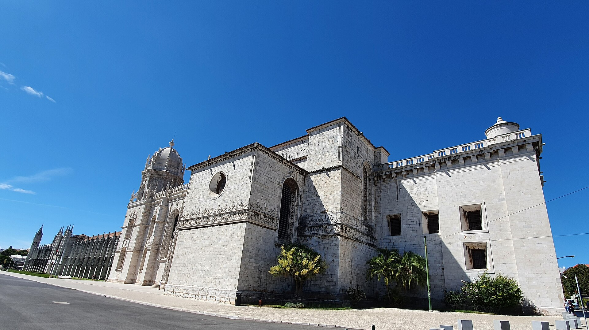

Itinerary · June 2026 · Three families
Two Days in Lisbon
A clean route through the city — modern waterfront, the medieval old town, the great monuments, and the design quarters. Curated to keep the little ones happy and the driving simple.
The shape of it — each day moves the cars three times
Parque das Nações
the aquarium morning
A sleek modern district on the river, built for Expo ’98: wide promenades, public art, splash fountains, and the best attraction in the city for kids. The easiest, lowest-stress way to begin.

- Morning coffee — Zagora Brunch / NinaZagora opens 8:30 (closed Tue); Nina opens 9:00. Proper specialty coffee right by the cable car.
- Oceanário de Lisboa First slotBook the first time slot; ~2 hrs, built around one enormous central tank.
- Telecabine KidsA short riverside cable-car ride (opens 11). A hit with the little ones.
- LunchOn the waterfront before moving the cars.
Museu Nacional do Azulejo Optional
Portuguese tile
Portugal’s signature blue-and-white tilework, housed in a former convent and ending in a huge tiled panorama of pre-earthquake Lisbon. Calm, uncrowded, quietly beautiful. This is the stop to drop if the group wants a slower day.

- The permanent collectionAnd the Grande Vista de Lisboa, a 75-foot tiled cityscape.
- Garden caféA shady reset before Alfama.
Alfama
the medieval old town
Lisbon’s oldest quarter: a steep maze of tiled houses, washing lines, viewpoints and gelato. Touristy around the castle and the main terraces, but one lane off it’s still a living neighborhood. Best in the late afternoon, once the bus crowds thin.

- Miradouro das Portas do SolPlus its garden kiosk — rooftops to the river; juice for the kids, a drink for you.
- Castelo de São Jorge OptionalRamparts, peacocks, the widest view in the city. A climb; skip if the kids are flagging.
- Cortiço & NetosFourth-generation azulejo dealers selling discontinued tiles; they ship.
- Gelado de Alfama / AmorinoThe gelato stops.
- Dinner — Prado / Cervejaria RamiroPrado (Baixa, farm-to-table, walkable) or Ramiro (loud, fast, legendary seafood — surprisingly kid-proof).
Belém
the monuments — kept light for little ones
Postcard Lisbon on the river: the great monastery, striking modern architecture, gardens, and the original custard tart. We’ve kept this to one indoor stop and plenty of open space so the 3- and 4-year-olds don’t burn out.

- Morning coffee — The Folks BelémOpens 8:30. A real roastery two minutes from the monastery.
- Mosteiro dos Jerónimos The one interiorGo to the cloister at opening; it’s a single open courtyard loop (~30 min) the kids can move around in.
- MAAT Outside onlyWalk up and over the white wave-roof, then the riverside path. No second museum interior.
- Gardens & riverfrontRoom for the kids to run. (Save your nata for Manteigaria later, or brave the Pastéis de Belém line if you must.)
LX Factory
the creative-industrial lunch
A 19th-century factory complex under the big bridge, reborn as a village of design shops, murals, cafés and a famous bookstore. Genuinely cool, easy with kids (open courtyards, room to roam), and the midday hinge between the monuments and downtown.

- Lunch in the courtyardLots of options; kids wander between them.
- Ler DevagarA cathedral-scale bookshop with a flying-bicycle sculpture suspended over the shelves.
- Landeau One thing onlyThe legendary chocolate cake (the only thing they make).
Chiado · Bairro Alto · Príncipe Real
downtown
Lisbon’s elegant heart: shopping streets, historic cafés, a gilded church, craft shops and garden squares, all walkable uphill from one garage. The afternoon for browsing, coffee, and a sunset viewpoint.

- Afternoon coffee — Fábrica / Hello Kristof / ComobaYour pick of the third-wave roasters (Hello Kristof closes 3:45; the others to 5).
- Manteigaria NataThe pastel de nata you skipped in Belém, made fresh and warm.
- A Vida Portuguesa · Loja da Burel · Loja das ConservasGenuine Portuguese craft: goods, Serra da Estrela wool, design tins.
- Livraria Bertrand · Igreja de São RoqueThe oldest bookshop in the world, and a plain church with a staggering gilded interior.
- Jardim do Príncipe Real PlaygroundPlayground and a giant cedar for the kids; EmbaiXada palace-mall on the square.
- Miradouro de São Pedro de AlcântaraThe golden-hour view over the castle and Baixa.
- Dinner — Atalho Real / Senhor UvaAtalho Real (Príncipe Real, steak, family-friendly) or Senhor Uva (Estrela, natural wine, a more grown-up night).
Also on this trip → Castle, Coast & Cheese — a day on the Arrábida